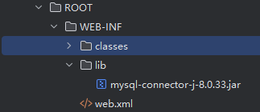
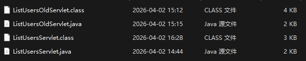
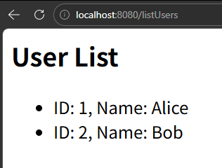
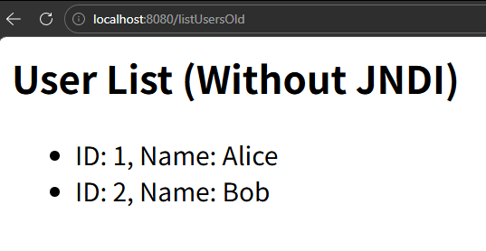

# 起因
前面学习了Fastjson/Shiro/Log4j2的反序列化漏洞，无一例外都使用到了JNDI服务来承载我们的恶意类，那么JNDI到底是什么呢？
# JNDI是什么
JNDI肯定不是专门为黑客留的后门。JNDI（Java命名和目录接口） 是 Java 提供的一套标准 API，允许应用程序通过一个逻辑名称来查找和获取资源（如数据库连接、消息队列等），而无需知道资源的具体位置或实现细节。
它的核心作用：解耦应用程序与资源的具体配置，让配置集中管理（如放在 Tomcat 的 context.xml 中），代码只依赖逻辑名称，修改资源时无需改动代码。
这样写出来很空洞，我们来写一个正统的JDNI的服务来演示一下。
# 环境搭建
# 配置文件
我们要使用Tomcat + Mysql来搭建一个简单的Web服务，用于理解使用JNDI服务的优势
我们打开我们的tomcat项目，在ROOT/WEB-INF/目录下创建lib文件夹，将我们的数据库依赖包放进去
下载链接
https://gitcode.com/open-source-toolkit/0b196/解压文件，将jar文件放入lib目录下

随后我们打开conf/context.xml，写入我们的数据库配置文件
<?xml version="1.0" encoding="UTF-8"?>
<!--
Licensed to the Apache Software Foundation (ASF) under one or more
contributor license agreements. See the NOTICE file distributed with
this work for additional information regarding copyright ownership.
The ASF licenses this file to You under the Apache License, Version 2.0
(the "License"); you may not use this file except in compliance with
the License. You may obtain a copy of the License at
http://www.apache.org/licenses/LICENSE-2.0
Unless required by applicable law or agreed to in writing, software
distributed under the License is distributed on an "AS IS" BASIS,
WITHOUT WARRANTIES OR CONDITIONS OF ANY KIND, either express or implied.
See the License for the specific language governing permissions and
limitations under the License.
-->
<!-- The contents of this file will be loaded for each web application -->
<Context>
<Resource name="jdbc/MyDB"
auth="Container"
type="javax.sql.DataSource"
driverClassName="com.mysql.cj.jdbc.Driver"
url="jdbc:mysql://localhost:3306/jndi_test?useSSL=false&serverTimezone=UTC"
username="root"
password="数据库密码"
maxTotal="20"
maxIdle="10"
maxWaitMillis="5000"/>
<!-- Default set of monitored resources. If one of these changes, the -->
<!-- web application will be reloaded. -->
<WatchedResource>WEB-INF/web.xml</WatchedResource>
<WatchedResource>WEB-INF/tomcat-web.xml</WatchedResource>
<WatchedResource>${catalina.base}/conf/web.xml</WatchedResource>
<!-- Uncomment this to disable session persistence across Tomcat restarts -->
<!--
<Manager pathname="" />
-->
</Context>
# 代码编写
再次回到ROOT/WEB-INF来写web.xml文件，这里做演示，简单写一个就可以
<?xml version="1.0" encoding="UTF-8"?>
<web-app xmlns="http://xmlns.jcp.org/xml/ns/javaee"
xmlns:xsi="http://www.w3.org/2001/XMLSchema-instance"
xsi:schemaLocation="http://xmlns.jcp.org/xml/ns/javaee
http://xmlns.jcp.org/xml/ns/javaee/web-app_4_0.xsd"
version="4.0">
<display-name>JNDI Demo</display-name>
<resource-ref>
<description>DB Connection</description>
<res-ref-name>jdbc/MyDB</res-ref-name>
<res-type>javax.sql.DataSource</res-type>
<res-auth>Container</res-auth>
</resource-ref>
</web-app>随后我们来写java文件,在WEB-INF中创建classes文件夹
我们先来写使用JDNI的文件ListUsersServlet.java
import javax.naming.Context;
import javax.naming.InitialContext;
import javax.sql.DataSource;
import javax.servlet.ServletException;
import javax.servlet.annotation.WebServlet;
import javax.servlet.http.HttpServlet;
import javax.servlet.http.HttpServletRequest;
import javax.servlet.http.HttpServletResponse;
import java.io.IOException;
import java.io.PrintWriter;
import java.sql.Connection;
import java.sql.ResultSet;
import java.sql.Statement;
@WebServlet("/listUsers")
public class ListUsersServlet extends HttpServlet {
@Override
protected void doGet(HttpServletRequest req, HttpServletResponse resp)
throws ServletException, IOException {
resp.setContentType("text/html;charset=UTF-8");
PrintWriter out = resp.getWriter();
try {
Context ctx = new InitialContext();
DataSource ds = (DataSource) ctx.lookup("java:comp/env/jdbc/MyDB");
try (Connection conn = ds.getConnection();
Statement stmt = conn.createStatement();
ResultSet rs = stmt.executeQuery("SELECT id, name FROM user")) {
out.println("<h2>User List</h2><ul>");
while (rs.next()) {
out.println("<li>ID: " + rs.getInt("id") + ", Name: " + rs.getString("name") + "</li>");
}
out.println("</ul>");
}
} catch (Exception e) {
out.println("Error: " + e.getMessage());
e.printStackTrace(out);
}
}
}在cmd中使用命令
javac -encoding UTF-8 -cp "C:\Users\syz\Desktop\e\apache-tomcat-9.0.115\lib\servlet-api.jar" ListUsersServlet.java因为此处用了tomcat的扩展库，javac只能加载JDK自带的库，所以直接使用javac会报错
其中C:\Users\syz\Desktop\e\apache-tomcat-9.0.115\lib\servlet-api.jar 为你自己的tomcat文件下lib目录
用同样方式写一个不用jdni服务的java文件ListUsersOldServlet
import javax.servlet.ServletException;
import javax.servlet.annotation.WebServlet;
import javax.servlet.http.HttpServlet;
import javax.servlet.http.HttpServletRequest;
import javax.servlet.http.HttpServletResponse;
import java.io.IOException;
import java.io.PrintWriter;
import java.sql.Connection;
import java.sql.DriverManager;
import java.sql.ResultSet;
import java.sql.Statement;
@WebServlet("/listUsersOld")
public class ListUsersOldServlet extends HttpServlet {
@Override
protected void doGet(HttpServletRequest req, HttpServletResponse resp)
throws ServletException, IOException {
resp.setContentType("text/html;charset=UTF-8");
PrintWriter out = resp.getWriter();
// 数据库连接信息 —— 硬编码在代码中
String url = "jdbc:mysql://localhost:3306/jndi_test?useSSL=false&serverTimezone=UTC";
String username = "root";
String password = "你的密码"; // 你的密码
String driver = "com.mysql.cj.jdbc.Driver";
try {
// 1. 加载驱动
Class.forName(driver);
// 2. 直接获取连接
try (Connection conn = DriverManager.getConnection(url, username, password);
Statement stmt = conn.createStatement();
ResultSet rs = stmt.executeQuery("SELECT id, name FROM user")) {
out.println("<h2>User List (Without JNDI)</h2><ul>");
while (rs.next()) {
out.println("<li>ID: " + rs.getInt("id") + ", Name: " + rs.getString("name") + "</li>");
}
out.println("</ul>");
}
} catch (Exception e) {
out.println("Error: " + e.getMessage());
e.printStackTrace(out);
}
}
}# 代码编译
同样进行编译，文件如下所示

随后我们进入tomcat文件的bin目录,使用命令打开服务
.\startup.bat 我们进入web页面,访问listUsers
http://localhost:8080/listUsers

看到已经正常连接到数据库了。
两种情况都可以连接数据库。我们可以看到，使用JNDI服务名称来调用数据库，而把数据库的配置信息写在Tomcat配置文件中
DataSource ds = (DataSource) ctx.lookup("java:comp/env/jdbc/MyDB");而没有使用JNDI服务的使用硬编码写在代码中
String url = "jdbc:mysql://localhost:3306/jndi_test?useSSL=false&serverTimezone=UTC";
String username = "root";
String password = "123456789"; // 你的密码
String driver = "com.mysql.cj.jdbc.Driver";# JNDI的优势
那么优势在哪里
| 维度 | 硬编码 | JNDI（连接池） |
|---|---|---|
| 连接管理 | 每次 getConnection 新建物理连接 |
连接池维护一组连接，复用空闲连接 |
| 错误触发点 | 直接调用 DriverManager |
连接池尝试创建或借出连接时 |
| 错误堆栈特征 | 简短，只有驱动和 DriverManager |
包含 BasicDataSource、PoolableConnectionFactory 等连接池类 |
| 配置位置 | 代码中硬编码 URL/用户名/密码 | Tomcat 的 context.xml（JNDI 资源） |
| 修复方式 | 修改代码中的密码 → 重新编译 → 重启 | 修改 context.xml 中的密码 → 重启 Tomcat（代码不变） |
# 安全问题
JNDI 的安全问题根源在于：它允许通过 lookup 方法动态加载并实例化远程对象（例如通过 RMI、LDAP 协议），且早期 JDK 版本中该功能默认开启、没有充分的安全限制。当攻击者能够控制 lookup 的参数（即 JNDI 名称）时，就可以诱导应用程序去连接恶意的命名服务，从而下载并执行任意恶意代码。
graph LR
A[注入 JNDI 字符串] --> B[JNDI lookup]
B --> C[恶意服务器返回 Reference]
C --> D[下载并实例化恶意类]
D --> E[RCE]漏洞的根本原因是：JNDI 允许通过 lookup 解析外部可控的名称，并且支持从远程（或通过本地类）加载并执行代码。
trustURLCodebase 只是控制远程类加载的开关，而 lookup 参数可控是攻击的前提。两者缺一不可，但设计上的“过度灵活”才是更深层的问题。
# 一句话总结
JNDI 的安全问题是因为它“过于强大”——允许从远程动态加载类，并且很多应用会把不可信的用户输入传递给 lookup 方法，攻击者借此注入恶意 JNDI 名称，最终导致远程代码执行。
高版本 JDK 通过默认禁用远程 codebase 加载（trustURLCodebase=false）缓解了该问题，但利用本地类（如 Tomcat 的 BeanFactory）的绕过手法依然存在，因此 JNDI 注入仍是 Java 安全的重要关注点。
最后注：trustURLCodebase 的默认值在不同协议和JDK版本中是分阶段调整为 false 的，没有单一的“一刀切”版本。所以这里的高版本为泛指，具体情况还要具体分析